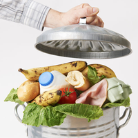

Marnowanie jedzenia jest obecnie jednym z największych globalnych problemów. Każdego roku na wysypiskach lądują miliardy ton jedzenia, przyczyniając się do zwiększonej emisji gazów do atmosfery. Jednak wyrzucając jedzenie szkodzimy nie tylko środowisku. Szacuje się, że wraz ze zmarnowaną żywnością w naszych koszach na śmieci ląduje miesięcznie nawet 200 zł! W dzisiejszym wpisie podzielę się z Wami 10 sposobami na to, żeby nie marnować jedzenia. Jeśli chcecie wiedzieć, jak w prosty sposób zaoszczędzić nawet 2,5 tys. zł rocznie i mieć swój wkład w ochronę środowiska, zapraszam do lektury.
Dlaczego marnujemy tak duże ilości żywności?
W Polsce rocznie marnuje się co najmniej 9 mln ton jedzenia, a do wyrzucania żywności do kosza przyznaje się 34% mieszkańców naszego kraju (dane z 2007 roku). Powodów wyrzucania jedzenia jest sporo, a do najczęściej wymienianych należą zbyt duże zakupy, przegapienie terminu przydatności do spożycia i przyrządzanie zbyt dużych porcji jedzenia. Na liście powodów znajduje się też niewłaściwe przechowywanie żywności, brak pomysłu jak wykorzystać kupiony produkt i kupowanie produktów złej jakości. Często wyrzucamy też jedzenie, które nam nie smakuje, albo na zjedzenie którego nie mamy ochoty.
Najczęściej wyrzucane przez nas produkty to:
Jak nie marnować jedzenia?
Poznaj 10 sprawdzonych sposób, dzięki którym będziesz wyrzucać mniej jedzenia i zaoszczędzisz nawet 2,5 tys.zł rocznie!Marnowanie jedzenia jest obecnie jednym z największych globalnych problemów. Każdego roku na wysypiskach lądują miliardy ton jedzenia, przyczyniając się do zwiększonej emisji gazów do atmosfery. Jednak wyrzucając jedzenie szkodzimy nie tylko środowisku. Szacuje się, że wraz ze zmarnowaną żywnością w naszych koszach na śmieci ląduje miesięcznie nawet 200 zł! W dzisiejszym wpisie podzielę się z Wami 10 sposobami na to, żeby nie marnować jedzenia. Jeśli chcecie wiedzieć, jak w prosty sposób zaoszczędzić nawet 2,5 tys. zł rocznie i mieć swój wkład w ochronę środowiska, zapraszam do lektury.
Dlaczego marnujemy tak duże ilości żywności?
W Polsce rocznie marnuje się co najmniej 9 mln ton jedzenia, a do wyrzucania żywności do kosza przyznaje się 34% mieszkańców naszego kraju (dane z 2007 roku). Powodów wyrzucania jedzenia jest sporo, a do najczęściej wymienianych należą zbyt duże zakupy, przegapienie terminu przydatności do spożycia i przyrządzanie zbyt dużych porcji jedzenia. Na liście powodów znajduje się też niewłaściwe przechowywanie żywności, brak pomysłu jak wykorzystać kupiony produkt i kupowanie produktów złej jakości. Często wyrzucamy też jedzenie, które nam nie smakuje, albo na zjedzenie którego nie mamy ochoty.
Najczęściej wyrzucane przez nas produkty to:
- pieczywo – 54%
- wędliny – 49%
- warzywa – 33%
- owoce – 32%
- ziemniaki – 17%
- jogurty – 16%
- dania gotowe – 14%
- mięso – 11%ser – 11%
- mleko – 8%
- ryby – 4%
- jaja – 2%
Źródło: Raport “Nie marnuj jedzenia – 2017” Wyniki badania CAPIbus dla FEDERACJI
POLSKICH BANKÓW
ŻYWNOŚCI
- Rozsądne zakupy z listą w ręku
- Kupowanie produktów z końcowym terminem ważności
- Odpowiednie przechowywanie żywności
- Gotowanie z resztek
- Mniejsze porcje na talerzu
- Cotygodniowy przegląd lodówki
- Mrożenie jedzenia
- Kupowanie „samotnych bananów”
- Robienie domowych przetworów
- Dzielenie się jedzeniem z innymi.
Źródło: https://makehappyday.com/jak-marnowac-mniej-zywnosci